Contents
Problem 1
M = []; max = 1000; xo = 0.5; probs = 0:0.02:4; for p = 0:0.02:4 M = [M, logistic_map(p, xo, max)]; end figure(1); plot(probs,M(end-100:end,:),'.'); % 0 <= p < 1, system converges to 0 % 1 <= p < 3, system has single amplitude that varies with p % 3 <= p < 3.54, system demonstrates period doubling % 3.54 <= p, system exhibits chaos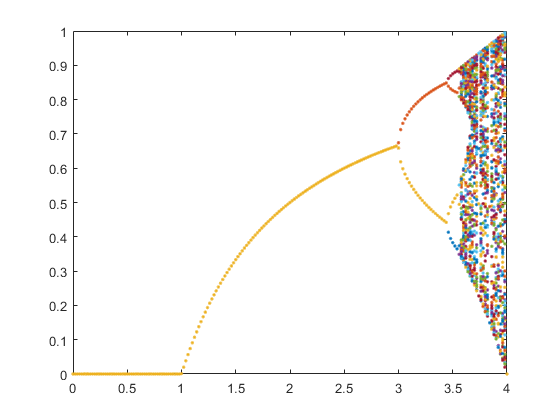
Problem 2
a) using p
%constants max = 1000; xo = 0.5; f1 = logistic_map(.3, xo, max); figure(); plot(.3 ,f1(end-100:end,:),'o') title('Zero Amplitude, p=.3') f2 = logistic_map(2, xo, max); figure(); plot(2,f2(end-100:end,:),'o') title('Single Amplitude, p=2') f3 = logistic_map(3.25, xo, max); figure(); plot(3.25,f3(end-100:end,:),'o') title('Two Amplitudes (beginning of period doubling), p=3.25') f4 = logistic_map(3.5, xo, max); figure(); plot(3.5,f4(end-100:end,:),'o') title('Four Amplitudes, p=3.5') f5 = logistic_map(3.8, xo, max); figure(); plot(3.8,f5(end-100:end,:),'o') title('Chaos, p=3.8') f6 = logistic_map(4.5, xo, max); figure(); plot(4.5,f6(end-100:end,:),'o') title('Equilibria diverge, p=4.5') % a) using k k = 0:1000; f1 = logistic_map(.3, xo, max); figure(); plot(k ,f1(end-1000:end,:)) title('Zero Amplitude, p=.3') f2 = logistic_map(2, xo, max); figure(); plot(k,f2(end-1000:end,:)) title('Single Amplitude, p=2') f3 = logistic_map(3.25, xo, max); figure(); plot(k,f3(end-1000:end,:)) title('Two Amplitudes (beginning of period doubling), p=3.25') f4 = logistic_map(3.5, xo, max); figure(); plot(k,f4(end-1000:end,:)) title('Four Amplitudes, p=3.5') f5 = logistic_map(3.8, xo, max); figure(); plot(k,f5(end-1000:end,:)) title('Chaos, p=3.8') f6 = logistic_map(4.5, xo, max); figure(); plot(k,f6(end-1000:end,:)) title('Equilibria diverge, p=4.5')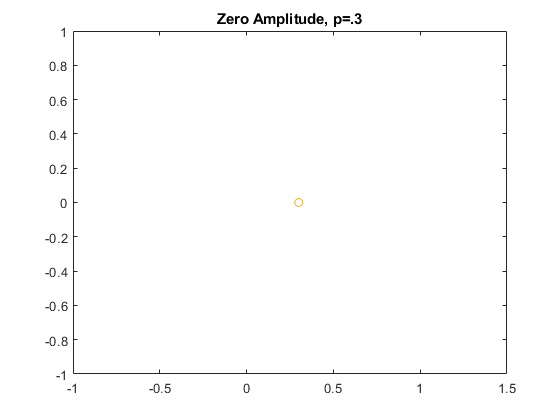 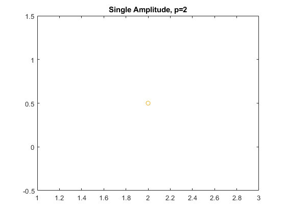 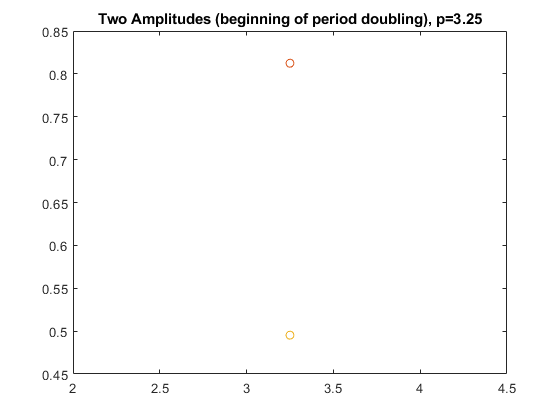 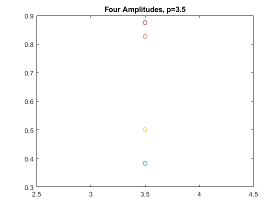 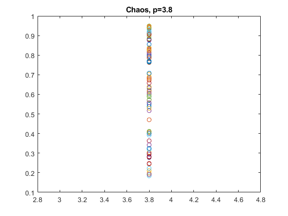 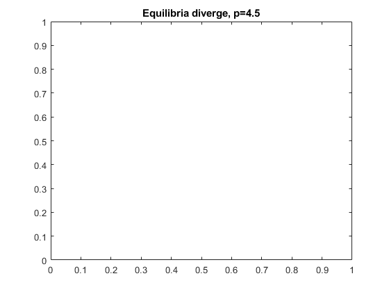 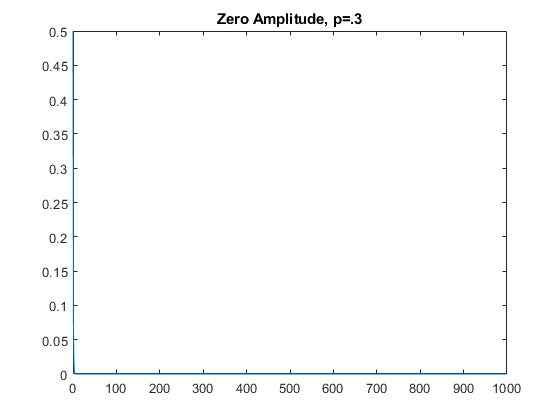 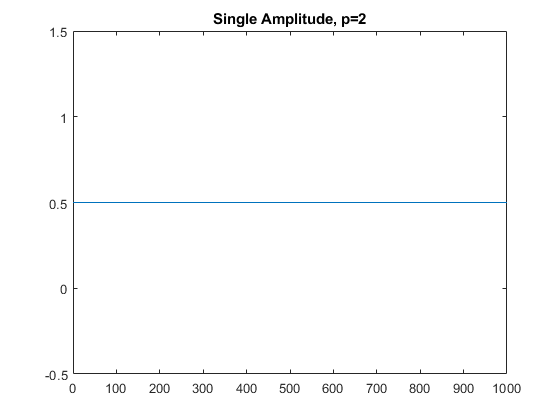 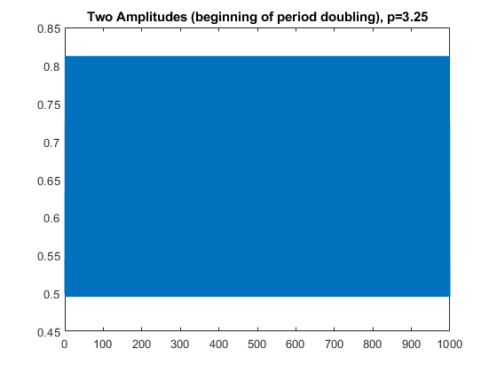 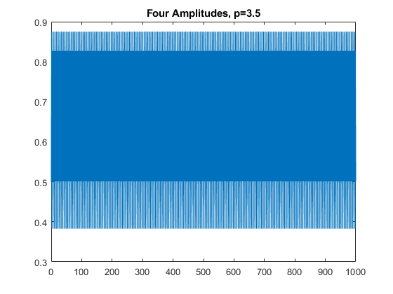 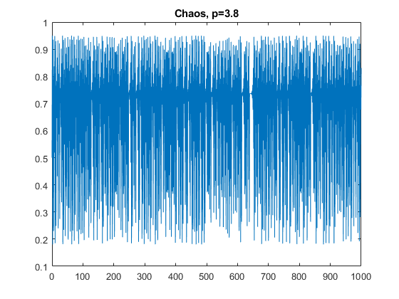 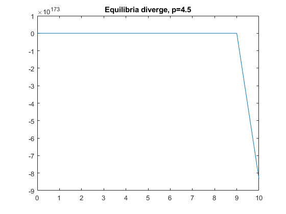
b) Initial condition 1.5
%constants max = 1000; xo = 1.5; f1 = logistic_map(.3, xo, max); figure(); plot(.3 ,f1(end-100:end,:),'o') title('Zero Amplitude, p=.3') f2 = logistic_map(2, xo, max); figure(); plot(2,f2(end-100:end,:),'o') title('Single Amplitude, p=2') f3 = logistic_map(3.25, xo, max); figure(); plot(3.25,f3(end-100:end,:),'o') title('Two Amplitudes (beginning of period doubling), p=3.25') f4 = logistic_map(3.5, xo, max); figure(); plot(3.5,f4(end-100:end,:),'o') title('Four Amplitudes, p=3.5') f5 = logistic_map(3.8, xo, max); figure(); plot(3.8,f5(end-100:end,:),'o') title('Chaos, p=3.8') f6 = logistic_map(4.5, xo, max); figure(); plot(4.5,f6(end-100:end,:),'o') title('Equilibria diverge, p=4.5') % b) using k k = 0:1000; f1 = logistic_map(.3, xo, max); figure(); plot(k ,f1(end-1000:end,:)) title('Zero Amplitude, p=.3') f2 = logistic_map(2, xo, max); figure(); plot(k,f2(end-1000:end,:)) title('Single Amplitude, p=2') f3 = logistic_map(3.25, xo, max); figure(); plot(k,f3(end-1000:end,:)) title('Two Amplitudes (beginning of period doubling), p=3.25') f4 = logistic_map(3.5, xo, max); figure(); plot(k,f4(end-1000:end,:)) title('Four Amplitudes, p=3.5') f5 = logistic_map(3.8, xo, max); figure(); plot(k,f5(end-1000:end,:)) title('Chaos, p=3.8') f6 = logistic_map(4.5, xo, max); figure(); plot(k,f6(end-1000:end,:)) title('Equilibria diverge, p=4.5')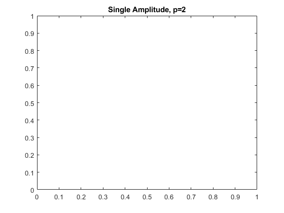 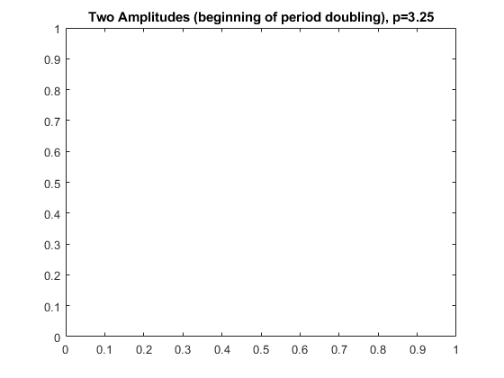 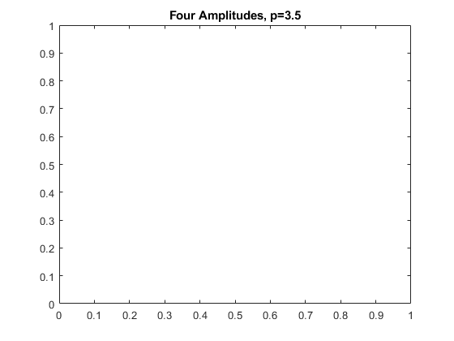 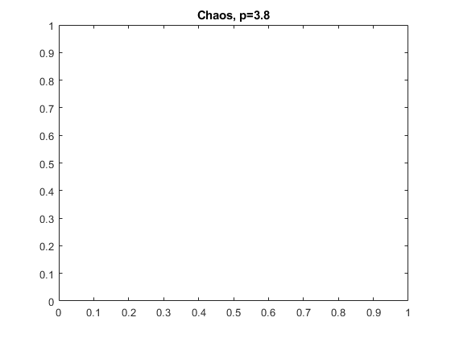 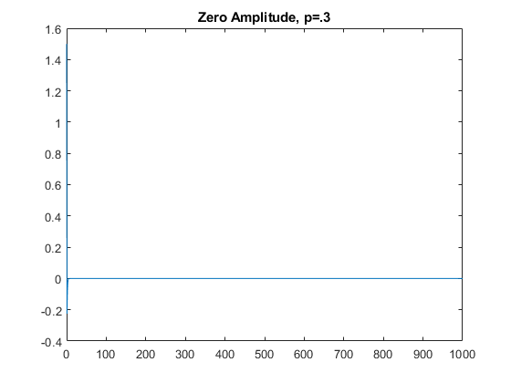 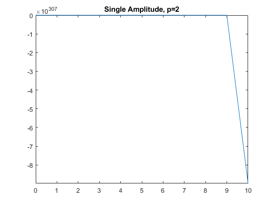 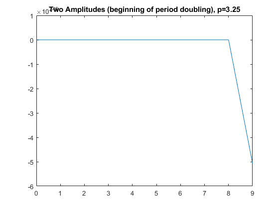 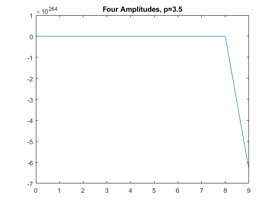 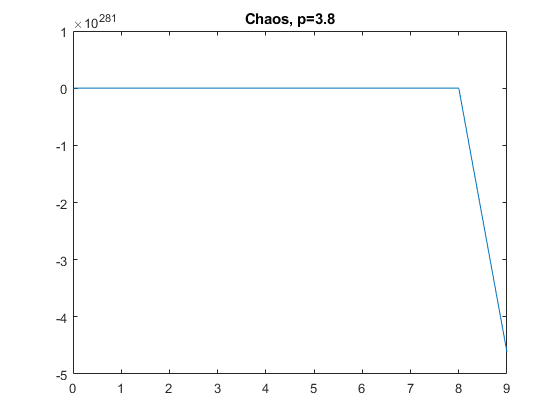 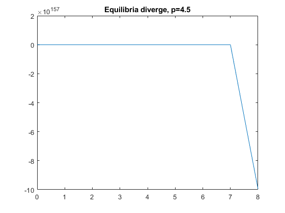
Problem 3
clear M = []; kmax = 5000; init = 0.5; probs = 3:0.01:3.5697; for p = 3:0.01:3.5697 res = logistic_map(p, init, kmax); M = [M, res]; end M_slice = M(end-100:end,:); % the last 100 or so rows of M figure; plot(probs,M_slice,'.'); title('Bifurcation Diagram (Greater Resolution): Period Doubling Region'); [row_num_M,col_num_M] = size(M_slice); Ts = []; deltas = []; for i=1:col_num_M [T,delta] = compute_delta(M_slice(:,i)); Ts = [Ts, T]; end figure plot(probs,Ts) title('T vs p') periods = [2, 4, 8, 16, 32]; ws = []; for i=[2,4,8,16,32] indices = find(Ts==i); min_index = min(indices); max_index = max(indices); p_min = probs(min_index); p_max = probs(max_index); w = p_max-p_min; ws = [ws w]; fprintf('T = %.4f \t p_min = %.4f \t p_max = %.4f \t w = %.4f\n', i, p_min, p_max, w) end F = []; for i = 1:length(ws)-1 ratio = ws(i)/ws(i+1); F = [F ratio]; end % List of ratios: F1, F2, F3, and F4 disp(F); % All ratios are between 4.6 and 4.8, and converging to about 4.7 or so. We % know that the actual Feigenbaum constant is 4.669 so this checks out.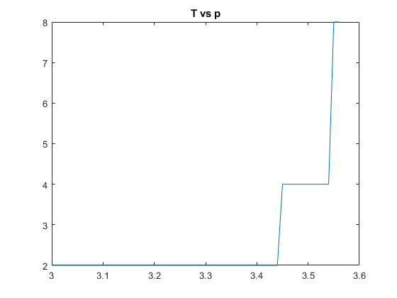
Problem 4
max = 500; xo = 0.5; for p = 3.82839:0.00001:3.82843 figure plot(logistic_map(p, xo, max)) title(p) end % find brief "disruption" at 3.8284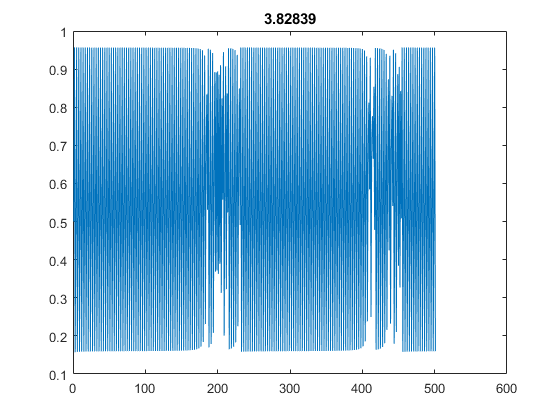 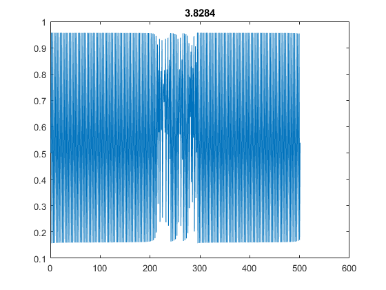 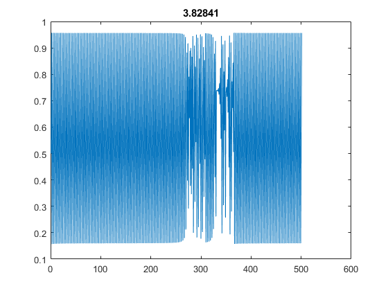 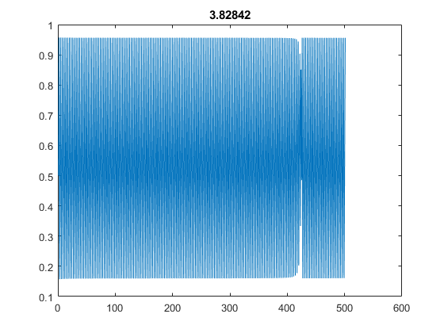 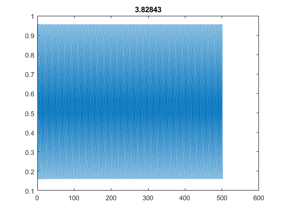
Problem 5
max = 500;
p = 3.9;
f1 = logistic_map(p, .5, max);
f2 = logistic_map(p, 0.5 + 10e-8, max);
fDiff = f2 - f1;
figure();
plot(fDiff)
% At around k = 43, the two solutions become visibly distinct
function x = logistic_map(p, xo, N) if (N < 1) return; end x = [xo]; temp = xo; for i=1:N new = p*temp*(1-temp); x = [x;new]; temp = new; end end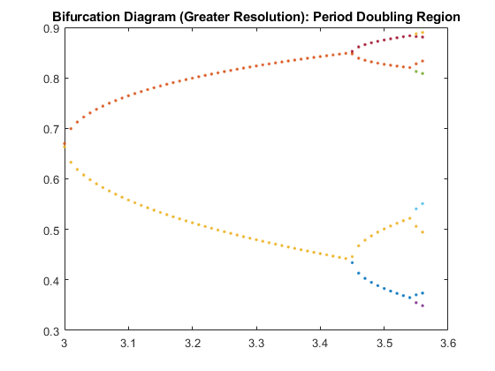
function [T,delta] = compute_delta(col_vec) possible_T = [2, 4, 8, 16, 32]; for i = 1:length(possible_T) T = possible_T(i); a1 = col_vec(end-T+1:end); a2 = col_vec(end-2*T+1:end-T); delta = a1-a2; if norm(delta,Inf) < 10^-4 return end end end
T = 2.0000 p_min = 3.0000 p_max = 3.4400 w = 0.4400
T = 4.0000 p_min = 3.4500 p_max = 3.5400 w = 0.0900
T = 8.0000 p_min = 3.5500 p_max = 3.5600 w = 0.0100
T = 16.0000 p_min = p_max = w =
T = 32.0000 p_min = p_max = w =
4.8889 9.0000